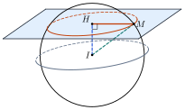

Equations of a SpherePhương trình mặt cầu
Grade 12 · Topic: Coordinate Geometry in SpaceLớp 12 · Chủ đề: Phương pháp tọa độ trong không gian
1Lesson IntroductionGiới thiệu bài học
Learning goalsMục tiêu bài học
By the end of this lesson you can:
Sau bài học này, em có thể:
recognise the equation of a sphere and read its centre and radius;
nhận biết phương trình mặt cầu, xác định tâm và bán kính;
write the equation of a sphere from given conditions (centre and point, diameter, tangent plane);
viết phương trình mặt cầu khi biết tâm và một điểm, đường kính, tiếp diện;
decide the position of a point, a plane or a line relative to a sphere;
xét vị trí tương đối của điểm, mặt phẳng, đường thẳng với mặt cầu;
solve problems on tangency and cross-sections, including real situations.
giải bài toán về tiếp diện, đường tròn giao tuyến, kể cả tình huống thực tế.
2Mathematical VocabularyTừ vựng Toán học
sphere – the set of points \(M\) in space with \(IM=R\) (centre \(I\), radius \(R\gt0\)).
mặt cầu – tập hợp các điểm \(M\) trong không gian có \(IM=R\) (tâm \(I\), bán kính \(R\gt0\)).
general equation of a sphere – \(x^2+y^2+z^2-2ax-2by-2cz+d=0\) with \(a^2+b^2+c^2-d\gt0\).
phương trình tổng quát của mặt cầu – \(x^2+y^2+z^2-2ax-2by-2cz+d=0\) với \(a^2+b^2+c^2-d\gt0\).
tangent plane – a plane with exactly one common point with the sphere; then \(d(I,(P))=R\).
tiếp diện – mặt phẳng có đúng một điểm chung với mặt cầu; khi đó \(d(I,(P))=R\).
cross-section circle – the circle where a plane cuts a sphere; radius \(r=\sqrt{R^2-d^2}\).
đường tròn giao tuyến – đường tròn là giao của mặt phẳng và mặt cầu; bán kính \(r=\sqrt{R^2-d^2}\).
3Useful English PhrasesCụm từ tiếng Anh thường gặp
The sphere has centre \(I\) and radius three.
Mặt cầu có tâm \(I\), bán kính 3.
The distance from the centre to the plane equals the radius.
Khoảng cách từ tâm đến mặt phẳng bằng bán kính.
The plane cuts the sphere along a circle.
Mặt phẳng cắt mặt cầu theo một đường tròn.
The point lies inside the sphere.
Điểm nằm trong mặt cầu.
Complete the squares.
Đưa về tổng các bình phương.
4Prerequisite ReviewÔn tập kiến thức nền
From Bài 14–15: \(d(M,(P))=\dfrac{|Ax_0+By_0+Cz_0+D|}{\sqrt{A^2+B^2+C^2}}\); \(AB=\sqrt{(x_B-x_A)^2+(y_B-y_A)^2+(z_B-z_A)^2}\); midpoint \(\left(\frac{x_A+x_B}2;\frac{y_A+y_B}2;\frac{z_A+z_B}2\right)\); the foot of the perpendicular from \(I\) to \((P)\) is \(I+t\vec n\).
Từ Bài 14–15: \(d(M,(P))=\dfrac{|Ax_0+By_0+Cz_0+D|}{\sqrt{A^2+B^2+C^2}}\); \(AB=\sqrt{(x_B-x_A)^2+(y_B-y_A)^2+(z_B-z_A)^2}\); trung điểm \(\left(\frac{x_A+x_B}2;\frac{y_A+y_B}2;\frac{z_A+z_B}2\right)\); hình chiếu của \(I\) trên \((P)\) có dạng \(I+t\vec n\).
5TheoryLý thuyết
5.1 Equation of a spherePhương trình mặt cầu
Two formsHai dạng phương trình
Centre \(I(a;b;c)\), radius \(R\): \[(x-a)^2+(y-b)^2+(z-c)^2=R^2.\]
Tâm \(I(a;b;c)\), bán kính \(R\): \[(x-a)^2+(y-b)^2+(z-c)^2=R^2.\]
\(x^2+y^2+z^2-2ax-2by-2cz+d=0\) is a sphere \(\iff a^2+b^2+c^2-d\gt0\); then \(I(a;b;c)\), \(R=\sqrt{a^2+b^2+c^2-d}\). (The coefficients of \(x^2,y^2,z^2\) must be equal and there are no \(xy,yz,zx\) terms.)
\(x^2+y^2+z^2-2ax-2by-2cz+d=0\) là mặt cầu \(\iff a^2+b^2+c^2-d\gt0\); khi đó \(I(a;b;c)\), \(R=\sqrt{a^2+b^2+c^2-d}\). (Hệ số của \(x^2,y^2,z^2\) bằng nhau và không có số hạng \(xy,yz,zx\).)
Point and sphereVị trí của điểm và mặt cầu
\(IM\lt R\): \(M\) is inside; \(IM=R\): \(M\) is on the sphere; \(IM\gt R\): \(M\) is outside.
\(IM\lt R\): \(M\) nằm trong; \(IM=R\): \(M\) nằm trên mặt cầu; \(IM\gt R\): \(M\) nằm ngoài.
5.2 Planes, lines and spheresVị trí tương đối của mặt phẳng, đường thẳng với mặt cầu
| \(d=d(I,(P))\)\(d=d(I,(P))\) | PositionVị trí | Common pointsĐiểm chung |
|---|---|---|
| \(d\gt R\) | no common pointkhông cắt nhau | nonekhông có |
| \(d=R\) | tangent (\((P)\) is a tangent plane)tiếp xúc (\((P)\) là tiếp diện) | one point: the foot \(H\) of the perpendicular from \(I\)một điểm: hình chiếu \(H\) của \(I\) trên \((P)\) |
| \(d\lt R\) | cut along a circlecắt theo một đường tròn | circle with centre \(H\), radius \(r=\sqrt{R^2-d^2}\)đường tròn tâm \(H\), bán kính \(r=\sqrt{R^2-d^2}\) |
Line and sphereĐường thẳng và mặt cầu
Substitute the parametric equations into the sphere: a quadratic in \(t\) with 2, 1 or 0 roots \(\iff\) the line cuts the sphere at 2 points, is tangent, or misses it (equivalently \(d(I,\Delta)\lt R\), \(=R\), \(\gt R\)).
Thay phương trình tham số vào phương trình mặt cầu: được phương trình bậc hai theo \(t\) có 2, 1 hoặc 0 nghiệm \(\iff\) đường thẳng cắt mặt cầu tại 2 điểm, tiếp xúc hoặc không cắt (tương đương \(d(I,\Delta)\lt R\), \(=R\), \(\gt R\)).

Watch out!Lưu ý
In \(x^2+y^2+z^2-4x+\ldots\) the centre has \(a=2\) (half the coefficient, opposite sign). The right side of the standard form is \(R^2\), not \(R\). Always check \(a^2+b^2+c^2-d\gt0\) before calling an equation a sphere.
Trong \(x^2+y^2+z^2-4x+\ldots\) tâm có \(a=2\) (một nửa hệ số, đổi dấu). Vế phải của dạng chính tắc là \(R^2\), không phải \(R\). Luôn kiểm tra \(a^2+b^2+c^2-d\gt0\) trước khi kết luận là mặt cầu.
6Worked ExamplesVí dụ có lời giải
ExampleVí dụ 1BasicCơ bản – Centre and radiusTâm và bán kính
Find the centre and radius of a) \((x-1)^2+(y+2)^2+z^2=9\); b) \(x^2+y^2+z^2-4x+2y-6z+5=0\).
Tìm tâm và bán kính của mặt cầu a) \((x-1)^2+(y+2)^2+z^2=9\); b) \(x^2+y^2+z^2-4x+2y-6z+5=0\).
Analysis: a) Read directly. b) \(a,b,c\) are minus half the coefficients.
Phân tích: a) Đọc trực tiếp. b) \(a,b,c\) bằng âm một nửa các hệ số.
a) \(I(1;-2;0)\), \(R=\sqrt9=3\).
a) \(I(1;-2;0)\), \(R=\sqrt9=3\).
b) \(a=2\), \(b=-1\), \(c=3\), \(d=5\); \(R^2=4+1+9-5=9\).
b) \(a=2\), \(b=-1\), \(c=3\), \(d=5\); \(R^2=4+1+9-5=9\).
a) \(I(1;-2;0)\), \(R=3\); b) \(I(2;-1;3)\), \(R=3\).
a) \(I(1;-2;0)\), \(R=3\); b) \(I(2;-1;3)\), \(R=3\).
ExampleVí dụ 2BasicCơ bản – Writing equationsViết phương trình
a) Centre \(I(1;2;-1)\), through \(A(3;0;0)\). b) Diameter \(AB\) with \(A(2;-1;3)\), \(B(0;3;-1)\).
Viết phương trình mặt cầu: a) tâm \(I(1;2;-1)\), đi qua \(A(3;0;0)\); b) đường kính \(AB\) với \(A(2;-1;3)\), \(B(0;3;-1)\).
Analysis: \(R=IA\); for a diameter the centre is the midpoint.
Phân tích: \(R=IA\); với đường kính, tâm là trung điểm.
a) \(R^2=IA^2=4+4+1=9\): \((x-1)^2+(y-2)^2+(z+1)^2=9\).
a) \(R^2=IA^2=4+4+1=9\): \((x-1)^2+(y-2)^2+(z+1)^2=9\).
b) \(I(1;1;1)\), \(R^2=IA^2=1+4+4=9\): \((x-1)^2+(y-1)^2+(z-1)^2=9\).
b) \(I(1;1;1)\), \(R^2=IA^2=1+4+4=9\): \((x-1)^2+(y-1)^2+(z-1)^2=9\).
a) \((x-1)^2+(y-2)^2+(z+1)^2=9\); b) \((x-1)^2+(y-1)^2+(z-1)^2=9\).
a) \((x-1)^2+(y-2)^2+(z+1)^2=9\); b) \((x-1)^2+(y-1)^2+(z-1)^2=9\).
ExampleVí dụ 3IntermediateTrung bình – A tangent planeMặt cầu tiếp xúc mặt phẳng
Write the sphere with centre \(I(1;-2;3)\) tangent to \((P): 2x-y+2z-1=0\) and find the point of contact.
Viết phương trình mặt cầu tâm \(I(1;-2;3)\) tiếp xúc với \((P): 2x-y+2z-1=0\) và tìm tiếp điểm.
Analysis: \(R=d(I,(P))\); the contact point is the foot of the perpendicular.
Phân tích: \(R=d(I,(P))\); tiếp điểm là hình chiếu của \(I\) trên \((P)\).
\(R=\dfrac{|2+2+6-1|}{3}=3\): \((x-1)^2+(y+2)^2+(z-3)^2=9\).
\(R=\dfrac{|2+2+6-1|}{3}=3\): \((x-1)^2+(y+2)^2+(z-3)^2=9\).
\(H=I+t\vec n\): \(2(1+2t)-(-2-t)+2(3+2t)-1=0\iff9+9t=0\iff t=-1\), \(H(-1;-1;1)\).
\(H=I+t\vec n\): \(2(1+2t)-(-2-t)+2(3+2t)-1=0\iff9+9t=0\iff t=-1\), \(H(-1;-1;1)\).
\((x-1)^2+(y+2)^2+(z-3)^2=9\); contact point \(H(-1;-1;1)\).
\((x-1)^2+(y+2)^2+(z-3)^2=9\); tiếp điểm \(H(-1;-1;1)\).
ExampleVí dụ 4IntermediateTrung bình – A cross-sectionĐường tròn giao tuyến
Show that \((P): x+2y+2z+2=0\) cuts \((S): (x-1)^2+(y-1)^2+(z-2)^2=25\) along a circle; find its centre and radius.
Chứng minh \((P): x+2y+2z+2=0\) cắt \((S): (x-1)^2+(y-1)^2+(z-2)^2=25\) theo một đường tròn; tìm tâm và bán kính đường tròn đó.
Analysis: Compare \(d(I,(P))\) with \(R\).
Phân tích: So sánh \(d(I,(P))\) với \(R\).
\(I(1;1;2)\), \(R=5\); \(d=\dfrac{|1+2+4+2|}{3}=3\lt5\): they cut.
\(I(1;1;2)\), \(R=5\); \(d=\dfrac{|1+2+4+2|}{3}=3\lt5\): cắt nhau.
\(r=\sqrt{25-9}=4\); centre \(H=I-\vec n=(0;-1;0)\) (check: \(0-2+0+2=0\)).
\(r=\sqrt{25-9}=4\); tâm \(H=I-\vec n=(0;-1;0)\) (kiểm tra: \(0-2+0+2=0\)).
Circle with centre \(H(0;-1;0)\) and radius 4.
Đường tròn tâm \(H(0;-1;0)\), bán kính 4.
ExampleVí dụ 5AdvancedNâng cao – Wi-Fi coverageVùng phủ sóng Wi-Fi
In a room (unit: m, floor \((Oxy)\)), a router at \(I(4;3;2)\) covers points at most 5 m away. a) Write the boundary sphere. b) Is the desk point \(D(1;1;1)\) covered? c) On the floor, the covered region is a disc: find its radius.
Trong một phòng (đơn vị mét, sàn là \((Oxy)\)), bộ phát Wi-Fi đặt tại \(I(4;3;2)\) phủ sóng các điểm cách nó không quá 5 m. a) Viết phương trình mặt cầu biên. b) Điểm \(D(1;1;1)\) trên bàn có được phủ sóng không? c) Trên sàn, vùng phủ sóng là một hình tròn: tìm bán kính.
Analysis: b) Compare \(ID\) with 5. c) The floor is the plane \(z=0\).
Phân tích: b) So sánh \(ID\) với 5. c) Sàn là mặt phẳng \(z=0\).
a) \((x-4)^2+(y-3)^2+(z-2)^2=25\).
a) \((x-4)^2+(y-3)^2+(z-2)^2=25\).
b) \(ID^2=9+4+1=14\lt25\): covered.
b) \(ID^2=9+4+1=14\lt25\): được phủ sóng.
c) \(d(I,(Oxy))=2\), \(r=\sqrt{25-4}=\sqrt{21}\approx4{,}58\) m.
c) \(d(I,(Oxy))=2\), \(r=\sqrt{25-4}=\sqrt{21}\approx4{,}58\) m.
a) \((x-4)^2+(y-3)^2+(z-2)^2=25\); b) yes; c) about 4.58 m.
a) \((x-4)^2+(y-3)^2+(z-2)^2=25\); b) có; c) khoảng 4,58 m.
7PracticeBài tập luyện tập
A. Multiple ChoiceA. Trắc nghiệm nhiều lựa chọn
Centre and radius of \(x^2+y^2+z^2-2x+4y-4z+5=0\):
Tâm và bán kính của mặt cầu \(x^2+y^2+z^2-2x+4y-4z+5=0\) là…
Answer: c. \(R^2=4\).
Đáp án c. \(R^2=a^2+b^2+c^2-d=4\).
The sphere with centre \(I(0;\,1;\,-1)\) through \(A(2;\,3;\,0)\):
Mặt cầu tâm \(I(0;\,1;\,-1)\) đi qua \(A(2;\,3;\,0)\) là…
Answer: d. \(R^2=IA^2=9\).
Đáp án d. \(R^2=IA^2=9\).
Position of \((S): (x-1)^2+y^2+(z-2)^2=9\) and \((P): x+2y+2z+1=0\):
Vị trí tương đối của \((S): (x-1)^2+y^2+(z-2)^2=9\) và \((P): x+2y+2z+1=0\):
Answer: d. \(d(I,(P))=2\), \(R=3\).
Đáp án d. \(d(I,(P))=2\), \(R=3\).
B. True or FalseB. Đúng hoặc sai
\(x^2+y^2+z^2-2x-4y+2z+7=0\) is the equation of a sphere.
\(x^2+y^2+z^2-2x-4y+2z+7=0\) là phương trình của một mặt cầu.
\(a^2+b^2+c^2-d=-1\).
\(a^2+b^2+c^2-d=-1\).
The point \(A(2;\,2;\,0)\) lies on \((x-1)^2+y^2+(z+2)^2=9\).
Điểm \(A(2;\,2;\,0)\) thuộc mặt cầu \((x-1)^2+y^2+(z+2)^2=9\).
\(IA^2=9\).
\(IA^2=9\), \(R^2=9\).
C. Short AnswerC. Trả lời ngắn
Find the radius of the sphere with centre \(I(1;\,1;\,1)\) tangent to \((P): 2x+y+2z+4=0\).
Tìm bán kính mặt cầu tâm \(I(1;\,1;\,1)\) tiếp xúc với \((P): 2x+y+2z+4=0\).
Enter a number.
Nhập một số.
\(R=\dfrac{|9|}{3}=3\).
\(R=d(I,(P))=\dfrac{|9|}{3}=3\).
A ball of radius 10 cm is cut by a plane 6 cm from its centre. Find the radius of the cut (cm).
Một quả cầu bán kính 10 cm bị cắt bởi mặt phẳng cách tâm 6 cm. Tính bán kính của mặt cắt (cm).
Enter a number.
Nhập một số.
\(r=\sqrt{100-36}=8\).
\(r=\sqrt{R^2-d^2}=\sqrt{100-36}=8\).
A. Multiple ChoiceA. Trắc nghiệm nhiều lựa chọn
Centre and radius of \(x^2+y^2+z^2-4x-2y+6z+5=0\):
Tâm và bán kính của mặt cầu \(x^2+y^2+z^2-4x-2y+6z+5=0\) là…
Answer: c. \(R^2=9\).
Đáp án c. \(R^2=a^2+b^2+c^2-d=9\).
The sphere with centre \(I(1;\,-1;\,2)\) through \(A(3;\,1;\,3)\):
Mặt cầu tâm \(I(1;\,-1;\,2)\) đi qua \(A(3;\,1;\,3)\) là…
Answer: d. \(R^2=IA^2=9\).
Đáp án d. \(R^2=IA^2=9\).
Position of \((S): x^2+(y-2)^2+(z+1)^2=16\) and \((P): 2x-y+2z+16=0\):
Vị trí tương đối của \((S): x^2+(y-2)^2+(z+1)^2=16\) và \((P): 2x-y+2z+16=0\):
Answer: b. \(d(I,(P))=4\), \(R=4\).
Đáp án b. \(d(I,(P))=4\), \(R=4\).
B. True or FalseB. Đúng hoặc sai
\(x^2+y^2+z^2-4x+2y+6=0\) is the equation of a sphere.
\(x^2+y^2+z^2-4x+2y+6=0\) là phương trình của một mặt cầu.
\(a^2+b^2+c^2-d=-1\).
\(a^2+b^2+c^2-d=-1\).
The point \(A(3;\,5;\,2)\) lies on \(x^2+(y-1)^2+(z-1)^2=25\).
Điểm \(A(3;\,5;\,2)\) thuộc mặt cầu \(x^2+(y-1)^2+(z-1)^2=25\).
\(IA^2=26\).
\(IA^2=26\), \(R^2=25\).
C. Short AnswerC. Trả lời ngắn
Find the radius of the sphere with centre \(I(2;\,-1;\,0)\) tangent to \((P): x-2y+2z+5=0\).
Tìm bán kính mặt cầu tâm \(I(2;\,-1;\,0)\) tiếp xúc với \((P): x-2y+2z+5=0\).
Enter a number.
Nhập một số.
\(R=\dfrac{|9|}{3}=3\).
\(R=d(I,(P))=\dfrac{|9|}{3}=3\).
A ball of radius 13 cm is cut by a plane 5 cm from its centre. Find the radius of the cut (cm).
Một quả cầu bán kính 13 cm bị cắt bởi mặt phẳng cách tâm 5 cm. Tính bán kính của mặt cắt (cm).
Enter a number.
Nhập một số.
\(r=\sqrt{169-25}=12\).
\(r=\sqrt{R^2-d^2}=\sqrt{169-25}=12\).
A. Multiple ChoiceA. Trắc nghiệm nhiều lựa chọn
Centre and radius of \(x^2+y^2+z^2+2x-6y-2z-5=0\):
Tâm và bán kính của mặt cầu \(x^2+y^2+z^2+2x-6y-2z-5=0\) là…
Answer: c. \(R^2=16\).
Đáp án c. \(R^2=a^2+b^2+c^2-d=16\).
The sphere with centre \(I(2;\,0;\,1)\) through \(A(0;\,1;\,3)\):
Mặt cầu tâm \(I(2;\,0;\,1)\) đi qua \(A(0;\,1;\,3)\) là…
Answer: d. \(R^2=IA^2=9\).
Đáp án d. \(R^2=IA^2=9\).
Position of \((S): (x-1)^2+(y-1)^2+(z-1)^2=4\) and \((P): 2x+y-2z+8=0\):
Vị trí tương đối của \((S): (x-1)^2+(y-1)^2+(z-1)^2=4\) và \((P): 2x+y-2z+8=0\):
Answer: a. \(d(I,(P))=3\), \(R=2\).
Đáp án a. \(d(I,(P))=3\), \(R=2\).
B. True or FalseB. Đúng hoặc sai
\(x^2+y^2+z^2-6x+2z+9=0\) is the equation of a sphere.
\(x^2+y^2+z^2-6x+2z+9=0\) là phương trình của một mặt cầu.
\(a^2+b^2+c^2-d=1\).
\(a^2+b^2+c^2-d=1\).
The point \(A(4;\,0;\,3)\) lies on \((x-2)^2+(y+1)^2+(z-1)^2=9\).
Điểm \(A(4;\,0;\,3)\) thuộc mặt cầu \((x-2)^2+(y+1)^2+(z-1)^2=9\).
\(IA^2=9\).
\(IA^2=9\), \(R^2=9\).
C. Short AnswerC. Trả lời ngắn
Find the radius of the sphere with centre \(I(0;\,2;\,-1)\) tangent to \((P): 2x+2y-z+13=0\).
Tìm bán kính mặt cầu tâm \(I(0;\,2;\,-1)\) tiếp xúc với \((P): 2x+2y-z+13=0\).
Enter a number.
Nhập một số.
\(R=\dfrac{|18|}{3}=6\).
\(R=d(I,(P))=\dfrac{|18|}{3}=6\).
A ball of radius 17 cm is cut by a plane 8 cm from its centre. Find the radius of the cut (cm).
Một quả cầu bán kính 17 cm bị cắt bởi mặt phẳng cách tâm 8 cm. Tính bán kính của mặt cắt (cm).
Enter a number.
Nhập một số.
\(r=\sqrt{289-64}=15\).
\(r=\sqrt{R^2-d^2}=\sqrt{289-64}=15\).
D. Self-practice: Multiple ChoiceD. Tự luyện: trắc nghiệm
The sphere \(x^2+y^2+(z-1)^2=16\) has centre and radius…
Mặt cầu \(x^2+y^2+(z-1)^2=16\) có tâm và bán kính là…
Answer: a. \((x-a)^2+(y-b)^2+(z-c)^2=R^2\): \(I(a;b;c)\), \(R=\sqrt{16}=4\).
Đáp án a. \((x-a)^2+(y-b)^2+(z-c)^2=R^2\): tâm \(I(a;b;c)\), \(R=\sqrt{16}=4\).
The sphere \(x^2+y^2+z^2+4x-2y+1=0\) has centre and radius…
Mặt cầu \(x^2+y^2+z^2+4x-2y+1=0\) có tâm và bán kính là…
Answer: d. \(a,b,c\) are minus half the coefficients; \(R^2=a^2+b^2+c^2-d=4\).
Đáp án d. \(a,b,c\) bằng âm một nửa các hệ số; \(R^2=a^2+b^2+c^2-d=4\).
The sphere with centre \(I(0;\,4;\,2)\) and radius \(2\) is…
Mặt cầu tâm \(I(0;\,4;\,2)\), bán kính \(2\) có phương trình…
Answer: b. Right side is \(R^2=4\).
Đáp án b. Vế phải là \(R^2=4\).
The sphere with centre \(I(-2;\,3;\,4)\) passing through \(A(1;\,0;\,-2)\) is…
Mặt cầu tâm \(I(-2;\,3;\,4)\) và đi qua \(A(1;\,0;\,-2)\) có phương trình…
Answer: a. \(R^2=IA^2=54\).
Đáp án a. \(R^2=IA^2=54\).
The sphere with diameter \(AB\), \(A(2;\,5;\,-1)\), \(B(4;\,1;\,1)\), is…
Mặt cầu đường kính \(AB\) với \(A(2;\,5;\,-1)\), \(B(4;\,1;\,1)\) có phương trình…
Answer: c. Centre = midpoint \(I(3;\,3;\,0)\), \(R=\frac{AB}{2}\), \(R^2=6\).
Đáp án c. Tâm là trung điểm \(I(3;\,3;\,0)\), \(R=\frac{AB}{2}\), \(R^2=6\).
\(x^2+y^2+z^2+4y-4z+m=0\) is the equation of a sphere exactly when…
\(x^2+y^2+z^2+4y-4z+m=0\) là phương trình mặt cầu khi và chỉ khi…
Answer: d. Need \(a^2+b^2+c^2-d=8-m\gt0\).
Đáp án d. Cần \(a^2+b^2+c^2-d=8-m\gt0\).
Where is \(A(-3;\,-1;\,-2)\) relative to the sphere \((x+3)^2+(y-1)^2+(z+1)^2=4\)?
Điểm \(A(-3;\,-1;\,-2)\) có vị trí thế nào so với mặt cầu \((x+3)^2+(y-1)^2+(z+1)^2=4\)?
Answer: d. \(IA^2=5\), \(R^2=4\).
Đáp án d. \(IA^2=5\), \(R^2=4\).
The sphere with centre \(I(2;\,4;\,-1)\) tangent to \((P): -3x-6y-2z+42=0\) has radius…
Mặt cầu tâm \(I(2;\,4;\,-1)\) tiếp xúc với \((P): -3x-6y-2z+42=0\) có bán kính…
Answer: d. \(R=d(I,(P))=\dfrac{|14|}{7}=2\).
Đáp án d. \(R=d(I,(P))=\dfrac{|14|}{7}=2\).
Relative position of \((S): (x+3)^2+(y-2)^2+(z-4)^2=36\) and \((P): -2x-y-2z+10=0\):
Vị trí tương đối của \((S): (x+3)^2+(y-2)^2+(z-4)^2=36\) và \((P): -2x-y-2z+10=0\) là…
Answer: a. \(d(I,(P))=2\), \(R=6\).
Đáp án a. \(d(I,(P))=2\), \(R=6\).
\((P): -2x+y+2z+14=0\) cuts \((S): (x+1)^2+(y+2)^2+(z+1)^2=25\) along a circle of radius…
\((P): -2x+y+2z+14=0\) cắt \((S): (x+1)^2+(y+2)^2+(z+1)^2=25\) theo đường tròn có bán kính…
Answer: d. \(r=\sqrt{R^2-d^2}=\sqrt{25-16}=3\).
Đáp án d. \(r=\sqrt{R^2-d^2}=\sqrt{25-16}=3\).
Which point lies on \((S): (x-4)^2+(y+3)^2+z^2=49\)?
Điểm nào thuộc mặt cầu \((S): (x-4)^2+(y+3)^2+z^2=49\)?
Answer: d. \(IA^2=49=R^2\).
Đáp án d. \(IA^2=49=R^2\).
The sphere with centre \(I(-1;\,-3;\,-2)\) touches \((P): 2x-y-2z+4=0\) at…
Mặt cầu tâm \(I(-1;\,-3;\,-2)\) tiếp xúc với \((P): 2x-y-2z+4=0\) tại điểm…
Answer: b. Projection of \(I\) on \((P)\): \(I-1\vec n=(-3;\,-2;\,0)\).
Đáp án b. Hình chiếu của \(I\) trên \((P)\): \(H=I-1\vec n=(-3;\,-2;\,0)\).
A Wi-Fi router at \(I(1;\,5;\,3)\) (m) covers a ball of radius 10 m. Is the phone at \(A(-6;\,-2;\,5)\) covered?
Bộ phát Wi-Fi đặt tại \(I(1;\,5;\,3)\) (m) phủ sóng trong khối cầu bán kính 10 m. Điện thoại tại \(A(-6;\,-2;\,5)\) có bắt được sóng không?
Answer: b. \(IA^2=102\), \(R^2=100\).
Đáp án b. \(IA^2=102\), \(R^2=100\).
A ball with centre \(I(-2;\,-1;\,4)\) rests on the floor \((Oxy)\). Its equation is…
Quả bóng tâm \(I(-2;\,-1;\,4)\) đặt trên sàn \((Oxy)\) (tiếp xúc với sàn). Phương trình mặt cầu là…
Answer: b. \(R=d(I,(Oxy))=|z_I|=4\).
Đáp án b. \(R=d(I,(Oxy))=|z_I|=4\).
How many common points do the line \(\begin{cases}x=2+t\\y=1+t\\z=0\end{cases}\) and the sphere \(x^2+(y-3)^2+(z+1)^2=9\) have?
Đường thẳng \(\begin{cases}x=2+t\\y=1+t\\z=0\end{cases}\) và mặt cầu \(x^2+(y-3)^2+(z+1)^2=9\) có bao nhiêu điểm chung?
Answer: b. Distance from \(I\) to the line \(=3\), \(R=3\).
Đáp án b. Khoảng cách từ \(I\) đến đường thẳng bằng \(3\), \(R=3\).
D. Self-practice: Multiple ChoiceD. Tự luyện: trắc nghiệm
The sphere \((x-3)^2+(y-4)^2+(z-3)^2=4\) has centre and radius…
Mặt cầu \((x-3)^2+(y-4)^2+(z-3)^2=4\) có tâm và bán kính là…
Answer: a. \((x-a)^2+(y-b)^2+(z-c)^2=R^2\): \(I(a;b;c)\), \(R=\sqrt{4}=2\).
Đáp án a. \((x-a)^2+(y-b)^2+(z-c)^2=R^2\): tâm \(I(a;b;c)\), \(R=\sqrt{4}=2\).
The sphere \(x^2+y^2+z^2+6x-6y-8z+18=0\) has centre and radius…
Mặt cầu \(x^2+y^2+z^2+6x-6y-8z+18=0\) có tâm và bán kính là…
Answer: d. \(a,b,c\) are minus half the coefficients; \(R^2=a^2+b^2+c^2-d=16\).
Đáp án d. \(a,b,c\) bằng âm một nửa các hệ số; \(R^2=a^2+b^2+c^2-d=16\).
The sphere with centre \(I(0;\,0;\,4)\) and radius \(5\) is…
Mặt cầu tâm \(I(0;\,0;\,4)\), bán kính \(5\) có phương trình…
Answer: a. Right side is \(R^2=25\).
Đáp án a. Vế phải là \(R^2=25\).
The sphere with centre \(I(4;\,-1;\,3)\) passing through \(A(4;\,-3;\,0)\) is…
Mặt cầu tâm \(I(4;\,-1;\,3)\) và đi qua \(A(4;\,-3;\,0)\) có phương trình…
Answer: a. \(R^2=IA^2=13\).
Đáp án a. \(R^2=IA^2=13\).
The sphere with diameter \(AB\), \(A(5;\,3;\,-1)\), \(B(3;\,-1;\,-5)\), is…
Mặt cầu đường kính \(AB\) với \(A(5;\,3;\,-1)\), \(B(3;\,-1;\,-5)\) có phương trình…
Answer: b. Centre = midpoint \(I(4;\,1;\,-3)\), \(R=\frac{AB}{2}\), \(R^2=9\).
Đáp án b. Tâm là trung điểm \(I(4;\,1;\,-3)\), \(R=\frac{AB}{2}\), \(R^2=9\).
\(x^2+y^2+z^2+2x+m=0\) is the equation of a sphere exactly when…
\(x^2+y^2+z^2+2x+m=0\) là phương trình mặt cầu khi và chỉ khi…
Answer: d. Need \(a^2+b^2+c^2-d=1-m\gt0\).
Đáp án d. Cần \(a^2+b^2+c^2-d=1-m\gt0\).
Where is \(A(-1;\,2;\,2)\) relative to the sphere \(x^2+y^2+(z-3)^2=9\)?
Điểm \(A(-1;\,2;\,2)\) có vị trí thế nào so với mặt cầu \(x^2+y^2+(z-3)^2=9\)?
Answer: a. \(IA^2=6\), \(R^2=9\).
Đáp án a. \(IA^2=6\), \(R^2=9\).
The sphere with centre \(I(2;\,4;\,0)\) tangent to \((P): 2x+2y-z-6=0\) has radius…
Mặt cầu tâm \(I(2;\,4;\,0)\) tiếp xúc với \((P): 2x+2y-z-6=0\) có bán kính…
Answer: a. \(R=d(I,(P))=\dfrac{|6|}{3}=2\).
Đáp án a. \(R=d(I,(P))=\dfrac{|6|}{3}=2\).
Relative position of \((S): (x-2)^2+(y-3)^2+(z+1)^2=1\) and \((P): -x+2y-2z+3=0\):
Vị trí tương đối của \((S): (x-2)^2+(y-3)^2+(z+1)^2=1\) và \((P): -x+2y-2z+3=0\) là…
Answer: c. \(d(I,(P))=3\), \(R=1\).
Đáp án c. \(d(I,(P))=3\), \(R=1\).
\((P): 2x-y-2z-23=0\) cuts \((S): (x-3)^2+(y-2)^2+(z+2)^2=169\) along a circle of radius…
\((P): 2x-y-2z-23=0\) cắt \((S): (x-3)^2+(y-2)^2+(z+2)^2=169\) theo đường tròn có bán kính…
Answer: b. \(r=\sqrt{R^2-d^2}=\sqrt{169-25}=12\).
Đáp án b. \(r=\sqrt{R^2-d^2}=\sqrt{169-25}=12\).
Which point lies on \((S): (x+1)^2+(y-4)^2+(z+1)^2=81\)?
Điểm nào thuộc mặt cầu \((S): (x+1)^2+(y-4)^2+(z+1)^2=81\)?
Answer: c. \(IA^2=81=R^2\).
Đáp án c. \(IA^2=81=R^2\).
The sphere with centre \(I(0;\,0;\,-3)\) touches \((P): -2x-2y+z+21=0\) at…
Mặt cầu tâm \(I(0;\,0;\,-3)\) tiếp xúc với \((P): -2x-2y+z+21=0\) tại điểm…
Answer: c. Projection of \(I\) on \((P)\): \(I-2\vec n=(4;\,4;\,-5)\).
Đáp án c. Hình chiếu của \(I\) trên \((P)\): \(H=I-2\vec n=(4;\,4;\,-5)\).
A Wi-Fi router at \(I(2;\,2;\,2)\) (m) covers a ball of radius 9 m. Is the phone at \(A(7;\,-1;\,9)\) covered?
Bộ phát Wi-Fi đặt tại \(I(2;\,2;\,2)\) (m) phủ sóng trong khối cầu bán kính 9 m. Điện thoại tại \(A(7;\,-1;\,9)\) có bắt được sóng không?
Answer: c. \(IA^2=83\), \(R^2=81\).
Đáp án c. \(IA^2=83\), \(R^2=81\).
A ball with centre \(I(1;\,3;\,4)\) rests on the floor \((Oxy)\). Its equation is…
Quả bóng tâm \(I(1;\,3;\,4)\) đặt trên sàn \((Oxy)\) (tiếp xúc với sàn). Phương trình mặt cầu là…
Answer: a. \(R=d(I,(Oxy))=|z_I|=4\).
Đáp án a. \(R=d(I,(Oxy))=|z_I|=4\).
How many common points do the line \(\begin{cases}x=1\\y=5\\z=-2+t\end{cases}\) and the sphere \((x-1)^2+y^2+(z+2)^2=9\) have?
Đường thẳng \(\begin{cases}x=1\\y=5\\z=-2+t\end{cases}\) và mặt cầu \((x-1)^2+y^2+(z+2)^2=9\) có bao nhiêu điểm chung?
Answer: b. Distance from \(I\) to the line \(=5\), \(R=3\).
Đáp án b. Khoảng cách từ \(I\) đến đường thẳng bằng \(5\), \(R=3\).
D. Self-practice: Multiple ChoiceD. Tự luyện: trắc nghiệm
The sphere \((x-1)^2+(y-3)^2+(z+1)^2=16\) has centre and radius…
Mặt cầu \((x-1)^2+(y-3)^2+(z+1)^2=16\) có tâm và bán kính là…
Answer: b. \((x-a)^2+(y-b)^2+(z-c)^2=R^2\): \(I(a;b;c)\), \(R=\sqrt{16}=4\).
Đáp án b. \((x-a)^2+(y-b)^2+(z-c)^2=R^2\): tâm \(I(a;b;c)\), \(R=\sqrt{16}=4\).
The sphere \(x^2+y^2+z^2-2x+6y+4z-22=0\) has centre and radius…
Mặt cầu \(x^2+y^2+z^2-2x+6y+4z-22=0\) có tâm và bán kính là…
Answer: c. \(a,b,c\) are minus half the coefficients; \(R^2=a^2+b^2+c^2-d=36\).
Đáp án c. \(a,b,c\) bằng âm một nửa các hệ số; \(R^2=a^2+b^2+c^2-d=36\).
The sphere with centre \(I(1;\,-3;\,3)\) and radius \(3\) is…
Mặt cầu tâm \(I(1;\,-3;\,3)\), bán kính \(3\) có phương trình…
Answer: d. Right side is \(R^2=9\).
Đáp án d. Vế phải là \(R^2=9\).
The sphere with centre \(I(2;\,-1;\,-1)\) passing through \(A(0;\,1;\,-2)\) is…
Mặt cầu tâm \(I(2;\,-1;\,-1)\) và đi qua \(A(0;\,1;\,-2)\) có phương trình…
Answer: a. \(R^2=IA^2=9\).
Đáp án a. \(R^2=IA^2=9\).
The sphere with diameter \(AB\), \(A(0;\,-2;\,1)\), \(B(0;\,-4;\,1)\), is…
Mặt cầu đường kính \(AB\) với \(A(0;\,-2;\,1)\), \(B(0;\,-4;\,1)\) có phương trình…
Answer: d. Centre = midpoint \(I(0;\,-3;\,1)\), \(R=\frac{AB}{2}\), \(R^2=1\).
Đáp án d. Tâm là trung điểm \(I(0;\,-3;\,1)\), \(R=\frac{AB}{2}\), \(R^2=1\).
\(x^2+y^2+z^2+2x-2y+2z+m=0\) is the equation of a sphere exactly when…
\(x^2+y^2+z^2+2x-2y+2z+m=0\) là phương trình mặt cầu khi và chỉ khi…
Answer: d. Need \(a^2+b^2+c^2-d=3-m\gt0\).
Đáp án d. Cần \(a^2+b^2+c^2-d=3-m\gt0\).
Where is \(A(1;\,-3;\,0)\) relative to the sphere \((x-4)^2+(y+2)^2+(z+1)^2=25\)?
Điểm \(A(1;\,-3;\,0)\) có vị trí thế nào so với mặt cầu \((x-4)^2+(y+2)^2+(z+1)^2=25\)?
Answer: c. \(IA^2=11\), \(R^2=25\).
Đáp án c. \(IA^2=11\), \(R^2=25\).
The sphere with centre \(I(3;\,-3;\,-2)\) tangent to \((P): 2x+2y-z+4=0\) has radius…
Mặt cầu tâm \(I(3;\,-3;\,-2)\) tiếp xúc với \((P): 2x+2y-z+4=0\) có bán kính…
Answer: c. \(R=d(I,(P))=\dfrac{|6|}{3}=2\).
Đáp án c. \(R=d(I,(P))=\dfrac{|6|}{3}=2\).
Relative position of \((S): (x+3)^2+(y-1)^2+(z+3)^2=25\) and \((P): -2x-y-2z-5=0\):
Vị trí tương đối của \((S): (x+3)^2+(y-1)^2+(z+3)^2=25\) và \((P): -2x-y-2z-5=0\) là…
Answer: c. \(d(I,(P))=2\), \(R=5\).
Đáp án c. \(d(I,(P))=2\), \(R=5\).
\((P): -2x-y-2z+5=0\) cuts \((S): (x+1)^2+(y+1)^2+(z+2)^2=25\) along a circle of radius…
\((P): -2x-y-2z+5=0\) cắt \((S): (x+1)^2+(y+1)^2+(z+2)^2=25\) theo đường tròn có bán kính…
Answer: a. \(r=\sqrt{R^2-d^2}=\sqrt{25-16}=3\).
Đáp án a. \(r=\sqrt{R^2-d^2}=\sqrt{25-16}=3\).
Which point lies on \((S): (x-2)^2+(y-3)^2+(z-2)^2=9\)?
Điểm nào thuộc mặt cầu \((S): (x-2)^2+(y-3)^2+(z-2)^2=9\)?
Answer: c. \(IA^2=9=R^2\).
Đáp án c. \(IA^2=9=R^2\).
The sphere with centre \(I(2;\,4;\,3)\) touches \((P): -2x-2y-z+6=0\) at…
Mặt cầu tâm \(I(2;\,4;\,3)\) tiếp xúc với \((P): -2x-2y-z+6=0\) tại điểm…
Answer: a. Projection of \(I\) on \((P)\): \(I--1\vec n=(0;\,2;\,2)\).
Đáp án a. Hình chiếu của \(I\) trên \((P)\): \(H=I--1\vec n=(0;\,2;\,2)\).
A Wi-Fi router at \(I(1;\,6;\,3)\) (m) covers a ball of radius 9 m. Is the phone at \(A(0;\,0;\,-4)\) covered?
Bộ phát Wi-Fi đặt tại \(I(1;\,6;\,3)\) (m) phủ sóng trong khối cầu bán kính 9 m. Điện thoại tại \(A(0;\,0;\,-4)\) có bắt được sóng không?
Answer: c. \(IA^2=86\), \(R^2=81\).
Đáp án c. \(IA^2=86\), \(R^2=81\).
A ball with centre \(I(1;\,2;\,3)\) rests on the floor \((Oxy)\). Its equation is…
Quả bóng tâm \(I(1;\,2;\,3)\) đặt trên sàn \((Oxy)\) (tiếp xúc với sàn). Phương trình mặt cầu là…
Answer: a. \(R=d(I,(Oxy))=|z_I|=3\).
Đáp án a. \(R=d(I,(Oxy))=|z_I|=3\).
How many common points do the line \(\begin{cases}x=1+t\\y=-2+2t\\z=-2+2t\end{cases}\) and the sphere \((x-1)^2+(y+2)^2+(z+2)^2=9\) have?
Đường thẳng \(\begin{cases}x=1+t\\y=-2+2t\\z=-2+2t\end{cases}\) và mặt cầu \((x-1)^2+(y+2)^2+(z+2)^2=9\) có bao nhiêu điểm chung?
Answer: b. Distance from \(I\) to the line \(=0\), \(R=3\).
Đáp án b. Khoảng cách từ \(I\) đến đường thẳng bằng \(0\), \(R=3\).
8Common MistakesLỗi thường gặp
Sign of the centre. \((x+2)^2\) means \(a=-2\); \(-4x\) in the general form means \(a=2\).
Sai dấu tọa độ tâm. \((x+2)^2\) ứng với \(a=-2\); \(-4x\) trong dạng tổng quát ứng với \(a=2\).
Writing \(R\) instead of \(R^2\) on the right side.
Viết \(R\) thay cho \(R^2\) ở vế phải.
Forgetting the condition \(a^2+b^2+c^2-d\gt0\). \(x^2+y^2+z^2+1=0\) is not a sphere.
Quên điều kiện \(a^2+b^2+c^2-d\gt0\). \(x^2+y^2+z^2+1=0\) không phải mặt cầu.
Using \(r=R-d\) for a cross-section. Pythagoras: \(r=\sqrt{R^2-d^2}\).
Tính bán kính giao tuyến \(r=R-d\). Theo Pythagore: \(r=\sqrt{R^2-d^2}\).
9Lesson SummaryTổng kết
\((x-a)^2+(y-b)^2+(z-c)^2=R^2\): centre \(I(a;b;c)\), radius \(R\).
\((x-a)^2+(y-b)^2+(z-c)^2=R^2\): tâm \(I(a;b;c)\), bán kính \(R\).
\(x^2+y^2+z^2-2ax-2by-2cz+d=0\): sphere iff \(a^2+b^2+c^2-d\gt0\), \(R=\sqrt{a^2+b^2+c^2-d}\).
\(x^2+y^2+z^2-2ax-2by-2cz+d=0\): là mặt cầu khi \(a^2+b^2+c^2-d\gt0\), \(R=\sqrt{a^2+b^2+c^2-d}\).
Plane: \(d\gt R\) no common point; \(d=R\) tangent; \(d\lt R\) circle of radius \(\sqrt{R^2-d^2}\).
Mặt phẳng: \(d\gt R\) không cắt; \(d=R\) tiếp xúc; \(d\lt R\) cắt theo đường tròn bán kính \(\sqrt{R^2-d^2}\).
Key words: sphere, centre, radius, tangent plane, cross-section.
Từ cần nhớ: sphere, centre, radius, tangent plane, cross-section.